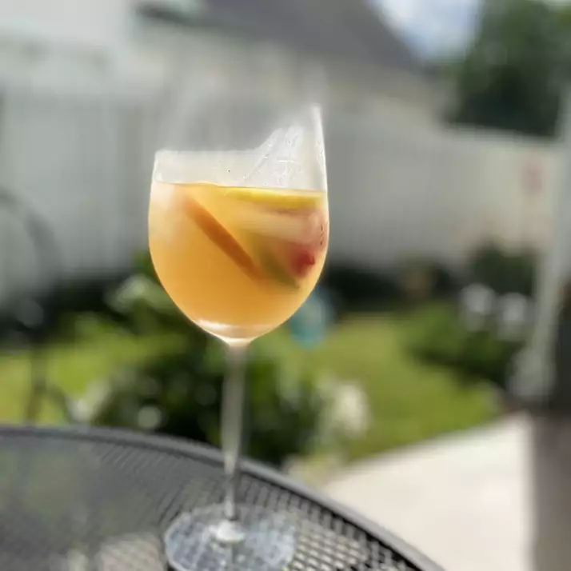

Sunset Sangria

Description
Prep:15 mins
Cook:5 mins
Additional:2 hrs 20 mins
Total:2 hrs 40 mins
Servings:6
Yield:6
Ingredients
- 1 (750 milliliter) bottle rose wine
- 1 cup pineapple juice
- ½ cup vodka
- ¼ cup triple sec
- ½ cup simple syrup
- 1 orange, sliced into rounds
- 1 lemon, sliced into rounds
- 1 lime, sliced into rounds
- 1 (6 ounce) container fresh raspberries
Steps
- Combine wine, pineapple juice, vodka, triple sec, and simple syrup in a large bowl or pitcher. Refrigerate until chilled, about 1 hour.
- Stir the oranges, lemons, limes, and raspberries into the chilled sangria at least 30 minutes before serving. The longer the fruit marinates the better. Serve over ice.